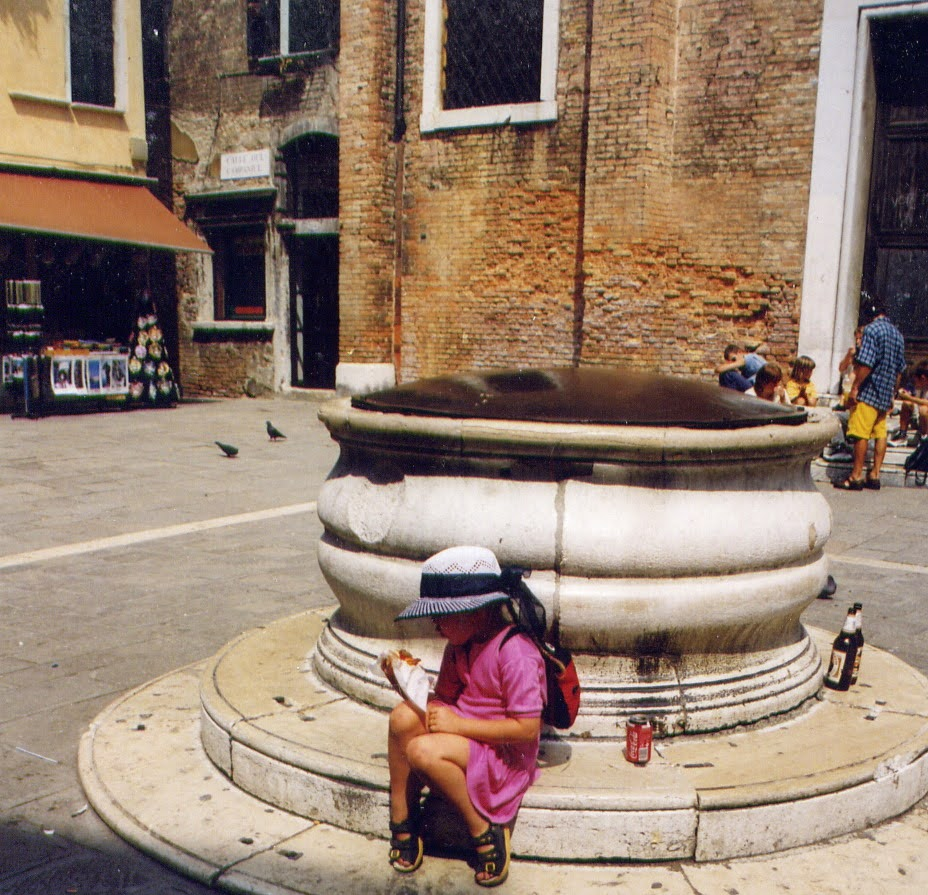

Ella Csarnó (pronounced "Char-noh") is a strategic communicator and event producer. She blends sharp strategic thinking with a creative spirit to bring complex projects to life. Ella loves to help creative people get things done, and to foster communities where people are seen and supported.
She has over a decade of experience in strategic communication, with a focus on event production and outreach. She led the communication of international projects at Hangvető, specifically MOST – the Bridge for Balkan Music and UPBEAT – the European Showcase Platform for World Music. During this time, she produced the Balkan World Music Guide and Balkan Festival Guide, distributed in 5000 print copies in 12 European countries.
Ella has worked at festivals such as Bankito, Budapest Ritmo, PONT, Trilla, and many others. She was essential in the 2021 Budapest Ritmo rebranding, which resulted in record ticket sales, and facilitated professional training programs in the music industry such as the 2020 and 2021 CEU Music in Heritage summer university courses. Ella produced an award-nominated podcast series, Dalkímia, focusing on the creative process of songwriting.
Adjacent to her work in communication, Ella has worked as a journalist and writer, with pieces focusing on technology, society, and art. She was an intern, later junior staff writer at Index.hu, Hungary’s leading online news site, and she did freelance work for the Taipei Times, the World of Young Cinema (Dazoo), Telex.hu, Merce.hu, and print publications such as Műértő Magazin and Vince Magazin.
Ella keeps returning to education, and considers her studies the core of her approach to work and life. She is currently an MPS candidate (2024) at Georgetown University in Project Management, with a certificate in Lean and Agile practices. Ella has an MA in International Communication Studies from National Chengchi University in Taipei, Taiwan, which she attended as a Taiwan Scholarship awardee, and a BA in Chinese and Italian Philology and Culture from ELTE University, Budapest.
During her BA she was also a member of the College for Advanced Studies in Social Theory where she studied and taught critical theory, and a member of the József Eötvös College, where she researched Chinese-Italian cultural ties, and taught Italian.
Ella published her MA thesis research with the help of her advisors and co-authors: In Social Media We Distrust: Investigating Users’ Hostile Media Perception of Facebook News Content.
Ella plays the drums and dances Argentine tango (but never at the same time).
Ella is originally from Hungary and spent a significant portion of her twenties in Taiwan. She currently lives in Washington, D.C. She’s fluent in Hungarian, English, and Italian, and also speaks German, Mandarin Chinese, and basic Hebrew.
